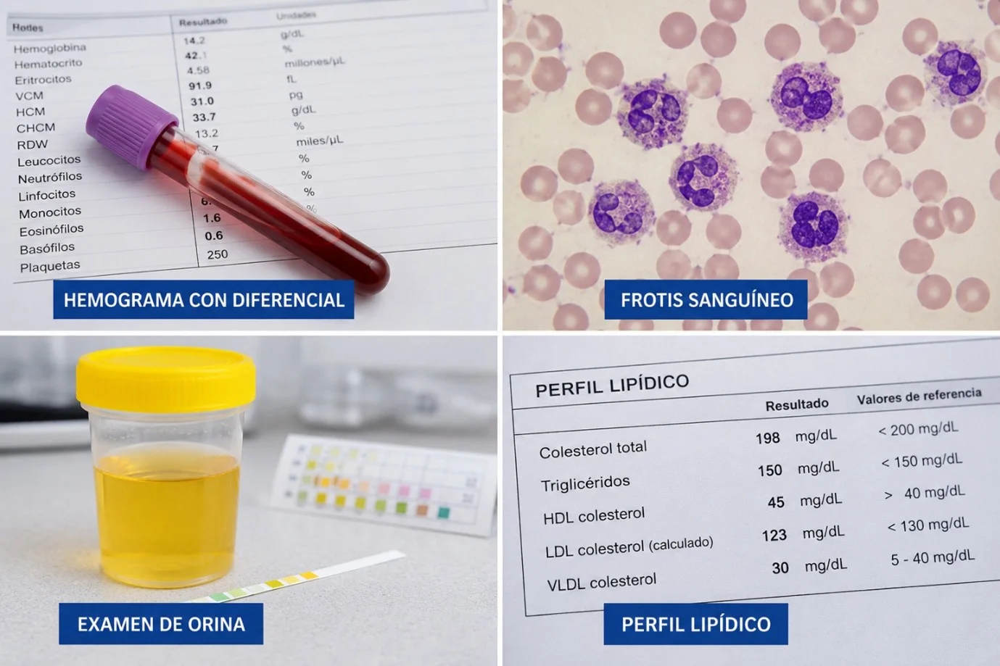
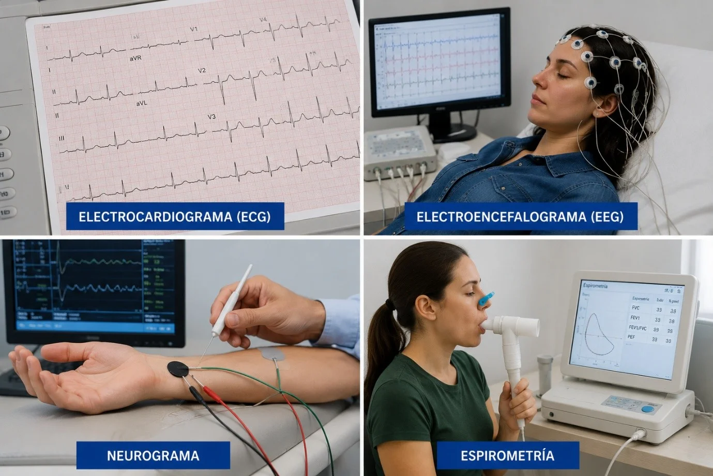
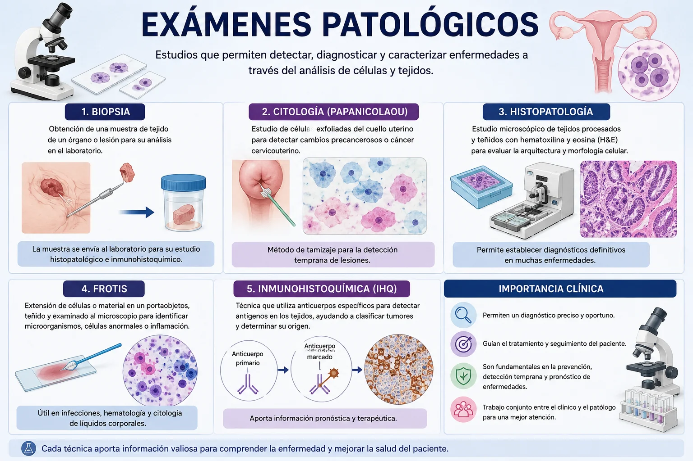

Medios de Diagnóstico
Introducción
Los medios de diagnóstico son el conjunto de pruebas, exámenes y procedimientos que utilizan los profesionales de la salud para obtener información sobre el estado del paciente, identificar enfermedades, confirmar diagnósticos y orientar el tratamiento más adecuado. Estos pueden incluir análisis de laboratorio, estudios de imagen y pruebas funcionales que ayudan a evaluar el funcionamiento del organismo.
Fuente: OMS — DiagnosticsTipos de medios de diagnóstico
Mapa general con ejemplos de cada categoría.
Medios de Diagnóstico

Análisis de laboratorio
- Hemograma con diferencial
- Frotis sanguíneo
- Examen de orina
- Perfil lipídico

Estudios de imagen
- Radiografía
- Ecografía
- Tomografía (TAC)
- Resonancia magnética (RM)

Pruebas funcionales
- Electrocardiograma (ECG)
- Electroencefalograma (EEG)
- Neurograma
- Espirometría

Exámenes patológicos
- Biopsia
- Citología (Papanicolaou)
- Histopatología
- Frotis
- Inmunohistoquímica
¿Para qué sirven?
Detectar enfermedades
Confirmar diagnósticos
Evaluar el estado de salud
Controlar tratamientos médicos